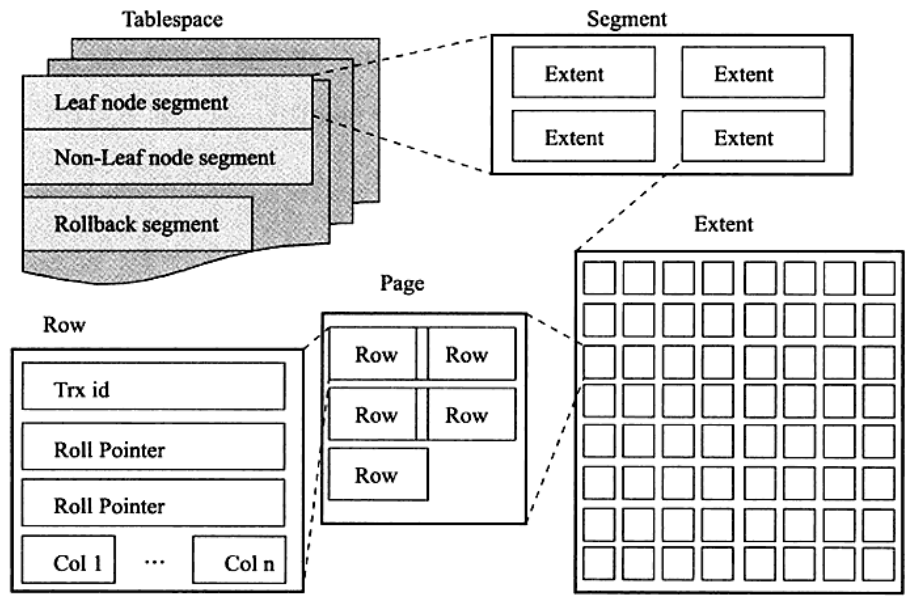
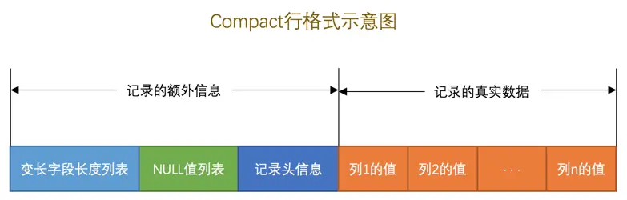
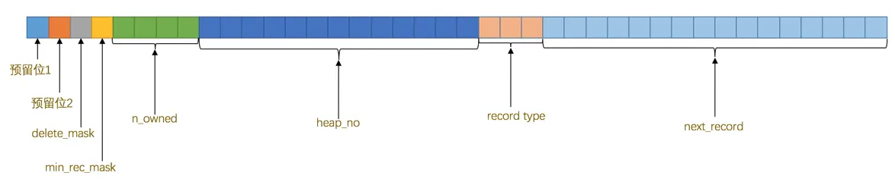
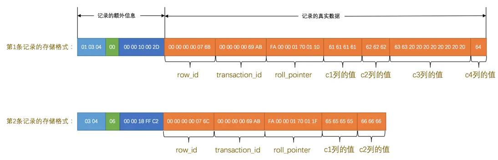

InnoDB磁盘结构¶
InnoDB存储引擎将表数据存储到磁盘上，而操作系统是通过文件系统来管理磁盘上的文件，所以InnoDB存储引擎把表存储到文件系统上。当我们想读取数据的时候，InnoDB从文件系统中把数据读出来返回给我们，当我们想写入数据的时候，InnoDB把这些数据又写回文件系统。
一、数据目录和安装目录¶
安装MySQL时我们自己指定的位置就是安装目录。在MySQL服务器启动时会加载某个目录下的一些文件，之后在运行过程中产生的数据也都会存储到这个目录下的某些文件中，这个目录称为数据目录。
MySQL的数据目录是通过系统变量datadir指定的：
mysql> show variables like 'datadir';
+---------------+-----------------+
| Variable_name | Value |
+---------------+-----------------+
| datadir | /var/lib/mysql/ |
+---------------+-----------------+
1 row in set (0.00 sec)
数据目录具体内容如下：
bash-4.4# ls -l /var/lib/mysql/
total 101368
-rw-r----- 1 mysql mysql 196608 Jan 27 04:07 '#ib_16384_0.dblwr'
-rw-r----- 1 mysql mysql 8585216 Jan 27 04:05 '#ib_16384_1.dblwr'
drwxr-x--- 2 mysql mysql 4096 Mar 24 2023 '#innodb_redo'
drwxr-x--- 2 mysql mysql 4096 Mar 24 2023 '#innodb_temp'
-rw-r----- 1 mysql mysql 56 Mar 24 2023 auto.cnf
-rw-r----- 1 mysql mysql 3033044 Mar 24 2023 binlog.000001
-rw-r----- 1 mysql mysql 157 Mar 24 2023 binlog.000002
-rw-r----- 1 mysql mysql 1708346 Jan 27 04:05 binlog.000003
-rw-r----- 1 mysql mysql 48 Mar 24 2023 binlog.index
-rw------- 1 mysql mysql 1676 Mar 24 2023 ca-key.pem
-rw-r--r-- 1 mysql mysql 1112 Mar 24 2023 ca.pem
-rw-r--r-- 1 mysql mysql 1112 Mar 24 2023 client-cert.pem
-rw------- 1 mysql mysql 1680 Mar 24 2023 client-key.pem
drwxr-x--- 2 mysql mysql 4096 Jan 27 03:56 halo
-rw-r----- 1 mysql mysql 5683 Mar 24 2023 ib_buffer_pool
-rw-r----- 1 mysql mysql 12582912 Jan 27 04:05 ibdata1
-rw-r----- 1 mysql mysql 12582912 Mar 24 2023 ibtmp1
drwxr-x--- 2 mysql mysql 4096 Mar 24 2023 mysql
-rw-r----- 1 mysql mysql 31457280 Jan 27 04:05 mysql.ibd
lrwxrwxrwx 1 mysql mysql 27 Mar 24 2023 mysql.sock -> /var/run/mysqld/mysqld.sock
drwxr-x--- 2 mysql mysql 4096 Mar 24 2023 performance_schema
-rw------- 1 mysql mysql 1676 Mar 24 2023 private_key.pem
-rw-r--r-- 1 mysql mysql 452 Mar 24 2023 public_key.pem
-rw-r--r-- 1 mysql mysql 1112 Mar 24 2023 server-cert.pem
-rw------- 1 mysql mysql 1680 Mar 24 2023 server-key.pem
drwxr-x--- 2 mysql mysql 4096 Mar 24 2023 sys
-rw-r----- 1 mysql mysql 16777216 Jan 27 04:07 undo_001
-rw-r----- 1 mysql mysql 16777216 Jan 27 04:07 undo_002
二、数据库在文件系统中的表示¶
2.1 数据库在文件系统的表示¶
当我们创建一个数据库时，会默认在数据目录下创建一个同名的文件夹，本文示例数据库如下，其中halo库是我们自己新增的，其他四个均为MySQL系统数据库：
mysql> show databases;
+--------------------+
| Database |
+--------------------+
| halo |
| information_schema |
| mysql |
| performance_schema |
| sys |
+--------------------+
5 rows in set (0.01 sec)
可以在上文数据目录中发现除了information_schema之外的数据库都能找到对应的文件夹。information_schema比较特殊，MySQL对它进行了特殊的处理，因此没有对应的文件夹。
2.2 InnoDB表在文件系统的表示¶
当我们在某个数据库里创建一个InnoDB表时，例如：
在默认情况下，会在数据目录对应数据库文件夹（halo）下创建一个表名.ibd文件，如下：
本文示例数据库版本为8.0.31，在8.0版本之前创建一个表会生成两个文件：
- 表名.frm
- 表名.ibd
其中frm文件用来保存表结构的定义信息。ibd文件用来保存表中的数据。
2.3 表空间¶
InnoDB使用表空间来管理数据和索引，它实际对应文件系统上一个或多个文件。InnoDB表空间有以下几种：系统表空间、独立表间、通用表空间、undo表空间、临时表空间。
2.3.1 系统表空间¶
系统表空间通过变量innodb_data_file_path配置，如下：
mysql> SHOW VARIABLES LIKE 'innodb_data_file_path';
+-----------------------+------------------------+
| Variable_name | Value |
+-----------------------+------------------------+
| innodb_data_file_path | ibdata1:12M:autoextend |
+-----------------------+------------------------+
1 row in set (0.00 sec)
其格式为：
默认情况下系统表空间即为文件系统中的ibdata1文件，默认大小为12M，并且可以自动扩展。我们可以通过修改innodb_data_file_path变量来改变系统表空间，例如：
这样在启动时MySQL就会创建两个大小为50M的文件作为系统表空间，并且空间不足时可以自动扩展。
2.3.2 独立表空间¶
在MySQL5.6.6之前的版本会把表中的数据默认都保存到系统表空间中。5.6.6及之后的版本，会为每一个表都创建一个独立表空间，也就是数据目录下数据库文件夹里面的每一个表名.ibd文件就是一个独立表空间。
我们可以通过变量innodb_file_per_table来控制是使用系统表空间还是独立表空间。
mysql> SHOW VARIABLES LIKE 'innodb_file_per_table';
+-----------------------+-------+
| Variable_name | Value |
+-----------------------+-------+
| innodb_file_per_table | ON |
+-----------------------+-------+
1 row in set (0.00 sec)
对于已分配的表，想更换表空间时可以通过如下语句修改：
--将表从系统表空间转移到独立表空间
ALTER TABLE 表名 TABLESPACE innodb_file_per_table;
--将表从独立表空间转移到系统表空间
ALTER TABLE 表名 TABLESPACE innodb_system;
2.4 表空间结构¶
表空间由段、区、页组成，其逻辑结构大致如下图所示：

2.4.1 段¶
表空间由各个段组成，常见的有数据段、索引段、回滚段等。InnoDB的表是索引组织表，因此数据及索引，索引即数据。那么数据段即为B+树叶子节点，索引段即为B+树非叶子节点。
2.4.2 区¶
区是由连续的页组成的空间，默认情况下，一个区由64个连续的页组成，一个页大小为16K，因此一个区大小为1M。
注：引入段和区是为了提升查询的性能
一个区由连续的页组成，避免随机IO。
而段的划分，是为了针对不同的数据，我们只需在不同类型的段中查询即可。如果段不区分不同数据，那么一个段中保存的连续的数据页的个数将会降低，查询时将增加随机IO的次数。
2.4.3 页¶
在InnoDB中一个页默认大小为16K，每次从磁盘以页为最小单位读取数据。可以通过innodb_page_size来配置一个页大小。
mysql> SHOW VARIABLES LIKE 'innodb_page_size';
+------------------+-------+
| Variable_name | Value |
+------------------+-------+
| innodb_page_size | 16384 |
+------------------+-------+
1 row in set (0.01 sec)
一个InnoDB数据页的存储空间大致被划分成了7个部分，有的部分占用的字节数是确定的，有的部分占用的字节数是不确定的。如下表所示：
| 名称 | 中文名 | 占用空间大小 | 简单描述 |
|---|---|---|---|
File Header |
文件头部 | 38字节 |
页的一些通用信息 |
Page Header |
页面头部 | 56字节 |
数据页专有的一些信息 |
Infimum + Supremum |
最小记录和最大记录 | 26字节 |
两个虚拟的行记录 |
User Records |
用户记录 | 不确定 | 实际存储的行记录内容 |
Free Space |
空闲空间 | 不确定 | 页中尚未使用的空间 |
Page Directory |
页面目录 | 不确定 | 页中的某些记录的相对位置 |
File Trailer |
文件尾部 | 8字节 |
校验页是否完整 |
2.4.3.1 page页结构图¶

2.4.3.1 页中的数据记录¶
用户入库的数据记录会保存在User Records中。初始化数据页时，并没有User Records部分，每当插入一条记录时，都会从Free Space部分申请一个记录大小的空间划分到User Records部分，当Free Space部分全部被User Records替换掉事，这页就用完了，当新纪录再插入时，就需要申请新的页。
2.4.3.1 File Header¶
File Header保存各种页都通用的一些信息，不同类型的页都会以File Header作为第一个组成部分，这个部分占用固定的38个字节，由下边这些内容组成
| 名称 | 占用空间大小 | 描述 |
|---|---|---|
FIL_PAGE_SPACE_OR_CHKSUM |
4字节 |
页的校验和（checksum值） |
FIL_PAGE_OFFSET |
4字节 |
页号 |
FIL_PAGE_PREV |
4字节 |
上一个页的页号 |
FIL_PAGE_NEXT |
4字节 |
下一个页的页号 |
FIL_PAGE_LSN |
8字节 |
页面被最后修改时对应的日志序列位置（英文名是：Log Sequence Number） |
FIL_PAGE_TYPE |
2字节 |
该页的类型 |
FIL_PAGE_FILE_FLUSH_LSN |
8字节 |
仅在系统表空间的一个页中定义，代表文件至少被刷新到了对应的LSN值 |
FIL_PAGE_ARCH_LOG_NO_OR_SPACE_ID |
4字节 |
页属于哪个表空间 |
- FIL_PAGE_OFFSET
每一个页都有一个页号，InnoDB通过页号来唯一定位一个页。
- FIL_PAGE_TYPE
当前页的类型，InnoDB为了不同的目的把页分为不同的类型。
| 类型名称 | 十六进制 | 描述 |
|---|---|---|
FIL_PAGE_TYPE_ALLOCATED |
0x0000 | 最新分配，还没使用 |
FIL_PAGE_UNDO_LOG |
0x0002 | Undo日志页 |
FIL_PAGE_INODE |
0x0003 | 段信息节点 |
FIL_PAGE_IBUF_FREE_LIST |
0x0004 | Insert Buffer空闲列表 |
FIL_PAGE_IBUF_BITMAP |
0x0005 | Insert Buffer位图 |
FIL_PAGE_TYPE_SYS |
0x0006 | 系统页 |
FIL_PAGE_TYPE_TRX_SYS |
0x0007 | 事务系统数据 |
FIL_PAGE_TYPE_FSP_HDR |
0x0008 | 表空间头部信息 |
FIL_PAGE_TYPE_XDES |
0x0009 | 扩展描述页 |
FIL_PAGE_TYPE_BLOB |
0x000A | 溢出页 |
FIL_PAGE_INDEX |
0x45BF | 索引页，也就是我们所说的数据页 |
- FIL_PAGE_PREV和FIL_PAGE_NEXT
InnoDB以页为单位存放数据，当表中数据量很大时，InnoDB不可能一次性分配一个连续的大空间来保存数据页，所以数据页实际在磁盘上是离散存储的。InnoDB为了管理数据页，在File Header中保存了上一个页和下一个页的页号。这样通过家里一个双向链表把很多页串联起来。
2.4.4 记录¶
InnoDB规定每页最少保存两条记录。当记录中的数据太多，当前页放不下的时候，会把多余的数据存储到其他页中，这种现象称为行溢出。
InnoDB目前提供四种格式：Compact、Redundant、Dynamic和Compressed。
-
Redundant是MySQL5.0版本之前一种非紧凑的行格式，现在基本没人用了。
-
Compact是MySQL5.0之后引入的一种紧凑的行格式，为了让一个数据页中可以存放更多的行记录
-
Dynamic和Compressed两个都是紧凑的行格式，它们的行格式都和Compact差不多，因为都是基于Compact改进一点东西。从MySQL5.7版本之后，默认使用Dynamic行格式。
2.4.4.1 Compact¶

2.4.4.2 变长字段长度列表¶
我们知道MySQL支持一些变长的数据类型，比如VARCHAR(M)、VARBINARY(M)、各种TEXT类型，各种BLOB类型，我们也可以把拥有这些数据类型的列称为变长字段，变长字段中存储多少字节的数据是不固定的，所以我们在存储真实数据的时候需要顺便把这些数据占用的字节数也存起来，这样才不至于把MySQL服务器搞懵，所以这些变长字段占用的存储空间分为两部分：
- 真正的数据内容（保存在
真实数据） - 占用的字节数（保存在
变长字段列表）
在Compact行格式中，把所有变长字段的真实数据占用的字节长度都存放在记录的开头部位，从而形成一个变长字段长度列表，各变长字段数据占用的字节数以16进制格式按照列的顺序逆序存放，逆序存放！
2.4.4.3 NULL值列表¶
我们知道表中的某些列可能存储NULL值，如果把这些NULL值都放到记录的真实数据中存储会很占地方，所以Compact行格式把这些值为NULL的列统一管理起来，存储到NULL值列表中。
2.4.4.3 记录头信息¶
除了变长字段长度列表、NULL值列表之外，还有一个用于描述记录的记录头信息，它是由固定的5个字节组成。5个字节也就是40个二进制位，不同的位代表不同的意思，如图：

这些二进制位代表的详细信息如下表：
| 名称 | 大小（单位：bit） | 描述 |
|---|---|---|
预留位1 |
1 |
没有使用 |
预留位2 |
1 |
没有使用 |
delete_mask |
1 |
标记该记录是否被删除 |
min_rec_mask |
1 |
B+树的每层非叶子节点中的最小记录都会添加该标记 |
n_owned |
4 |
表示当前记录拥有的记录数 |
heap_no |
13 |
表示当前记录在记录堆的位置信息 |
record_type |
3 |
表示当前记录的类型，0表示普通记录，1表示B+树非叶子节点记录，2表示最小记录，3表示最大记录 |
next_record |
16 |
表示下一条记录的相对位置 |
2.4.4.4 真实数据¶
记录的真实数据我们自己定义的列的数据以外，MySQL会为每个记录默认的添加一些列（也称为隐藏列），具体的列如下：
| 列名 | 是否必须 | 占用空间 | 描述 |
|---|---|---|---|
row_id |
否 | 6字节 |
行ID，唯一标识一条记录 |
transaction_id |
是 | 6字节 |
事务ID |
roll_pointer |
是 | 7字节 |
回滚指针 |
现在看一下加上记录的真实数据的两个记录长什么样吧：

2.4.4.5 Dynamic和Compressed¶
这两种行格式类似于COMPACT行格式，只不过在处理行溢出数据时有点儿分歧，它们不会在记录的真实数据处存储字符串的前768个字节，而是把所有的字节都存储到其他页面中，只在记录的真实数据处存储其他页面的地址。
另外，Compressed行格式会采用压缩算法对页面进行压缩。